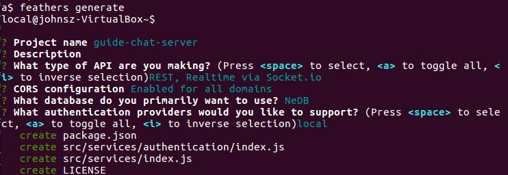
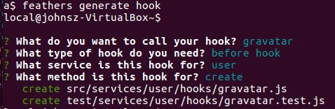

Starting the server
The server needs authentication, which automatically creates users, and messages.
Let's handle the user avatar also.
Working example
| Source code: https://github.com/eddyystop/feathers-an-introduction/tree/master/examples/chat/server/a
| Run it: node ./examples/chat/server/a/src
Basic scaffolding
We generated the app with:
mkdir examples/chat/server/a
cd examples/chat/server/a
a$ feathers generate

This generated the authentication and users services.
We then generated the messages service with:

We continued with generating a hook for handling the user avatar with: 
Clearing the database
Let's add code to clear the database each time this basic server is run. This'll help prevent confusion should the server be started multiple times.
// examples/chat/server/a/src/app.js
app.service('/users').remove(null)
.then(() => console.log('users table cleared.'))
.catch(err => {
if (err.className !== 'not-found') {
console.log('ERROR clearing users table:', err);
}
});
app.service('/messages').remove(null)
.then(() => console.log('messages table cleared.'))
.catch(err => {
if (err.className !== 'not-found') {
console.log('ERROR clearing messages table:', err);
}
});
The service.remove(null) deletes all that service's items.
Remove. You have to be careful not to accidentally pass
null. One way to protect yourself is by using a before hook that throws onnull.Feathers errors. Feathers handles errors cleanly. One of the things it does is return a
classNameon theerrorobject which indicates the type of error which occurred. That lets you check error types without resorting to the risky alternative of comparing toerror.message. In this case, we will not log an error if there were no items to delete.
Running the server
Start the server with node ./examples/chat/server/a/src and you will see:
Feathers application started on localhost:3030
users table cleared.
messages table cleared.
Let's exercise the server with HTTP REST using these curl commands:
curl 'http://localhost:3030/users/' --data-binary '{ "email": "john@gmail.com", "password": "john123" }' -H 'Content-Type: application/json'
curl 'http://localhost:3030/messages/' --data-binary '{ "text": "Hello." }' -H 'Content-Type: application/json'
curl 'http://localhost:3030/messages/' --data-binary '{ "text": "Hello again!" }' -H 'Content-Type: application/json'
curl 'http://localhost:3030/messages/' --data-binary '{ "text": "Anyone there?" }' -H 'Content-Type: application/json'
Run them on another terminal with ./examples/chat/server/a/curl-requests.sh
and the following is displayed:
feathers-an-introduction$ ./examples/chat/server/a/curl-requests.sh
POST user john@gmail.com
{"email":"john@gmail.com","avatar":"https://s.gravatar.com/avatar/1f9d9a9efc2f523b2f09629444632b5c?s=60","_id":"WZl8x0bsbP5JW1Po"}
POST message Hello.
{"text":"Hello.","_id":"ObRdBmk5joooylTx"}
POST message Hello again!
{"text":"Hello again!","_id":"KZ2Kjp9nnGMta8zP"}
POST message Anyone there?
{"text":"Anyone there?","_id":"tcjSjPZQx8JoUCrz"}
The password is not displayed due to the users' after remove hook